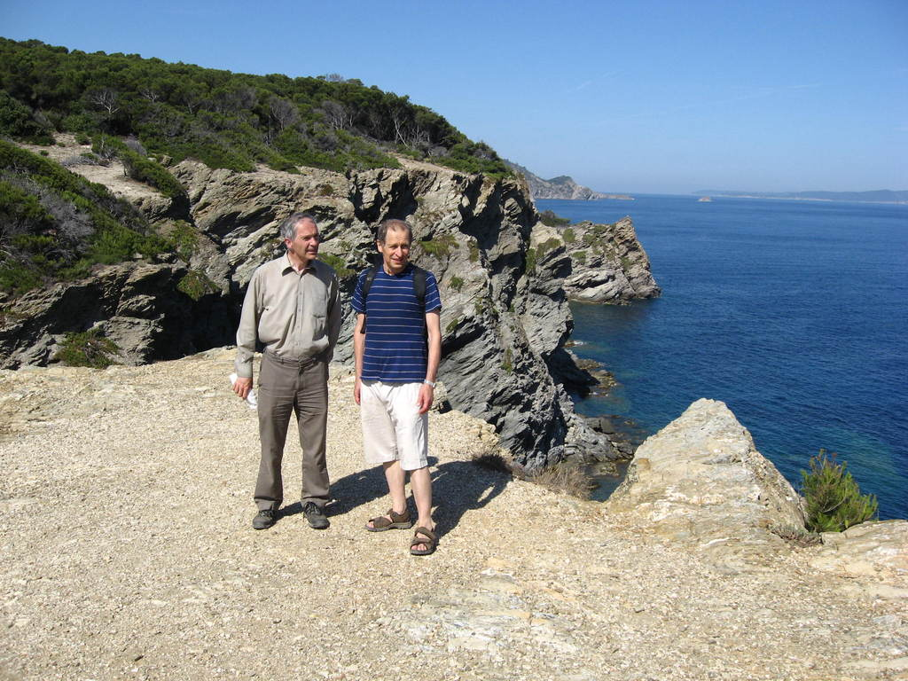

Some Pictures
|
On the left is Faraday House, about 200 yards from the gates of Hampton
Court Palace, where Michael Faraday spent the last years of his life and where he died. On the right is the former Bearsted Maternity Hospital, now an office building, where KJF was born. |
Benoit Mandelbrot, Kenneth Falconer and Robin Ball outside the Isaac Newton Institute in Cambridge |
|
|  | ||
|
Karoly Simon, Mark Pollicott and KJF at the Fractals and Related Fields meeting in Porquerolles, 2011 |
KJF and Pertti Mattila at the Porquerolles meeting (Photos: Zolton Buczolich) |
|

|
||
|
John Marstrand, Pertti Mattila, KJF and Roy Davies, Bristol 2014 (Photo: Tuomas Sahlsten) |
Speaking at the unveiling of the Sierpinski tree, Cambridge, May 2015 |
|
|
2011 British Race Walking Championships, 100 mile (= 160.9km) event (won gold medal for age group) |
Regius Professor appointment, December 2017
|
|
| At Land's End having walked from John o'Groats with wife Isobel, August 2025 | <--Regius Professor appointment, December 2017 | -->
Top| Home| Research| Teaching| Books, papers & preprints| Fractal sites| Maths sites| Contact